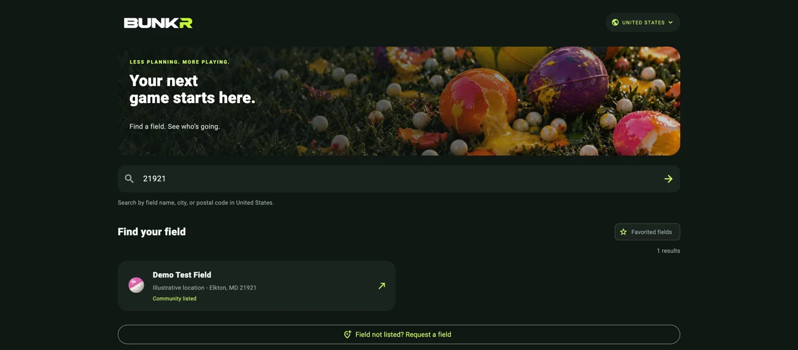

The player + field owner guide
More players.
Better field days.
A practical walkthrough for paintball and airsoft players, field owners, and counter staff. See how Bunkr helps people plan a day and how fields can recognize real visits.
Prefer a copy to keep? Download the illustrated PDF (3.7 MB).

Planned check-ins help players coordinate. At participating fields, staff verify actual visits using each player’s Bunkr Pass. Badges do not require a field discount or reward.
Screenshots show current layouts with fictional players, fields, visits, and offers.
For players / 02
Find your next field day.
Create your account, choose your country, and save the fields you want to return to.
One account across devices
Open app.bunkrpb.com. Choose Google or create an email/password account. Pick a unique username and accept the Terms confirming age 13+. Minors need guardian permission.
Use a personal device
The web and mobile apps share your account and plans. Use Remember me on your own device; sign out of shared devices.
Search and favorite
Choose a country, then search for a field. Open it and tap the outlined star to favorite it. The Favorited fields toggle shows your saved list. Discovery is shared across sports.
A useful starting point
Your selected country is remembered. Save a private postal / ZIP code under Player to set the starting search for that country. You can search another location anytime.
For players / 03
Choose a sport. Make a plan.
Open a field, choose a date, then select Paintball or Airsoft below the dates.
Make and manage a plan
Tap I'm playing this day. Choose Walk-On, Team, or Group, sport, dates, and times. Enter the full team / group size, then Confirm check-in. Use My days to reopen, edit, or Cancel my check-in.
Sport-specific choices
Paintball adds Speedball, Woodsball, or Mix and team divisions. Airsoft hides those choices. The selector filters counts, attendance, teams, and chat.
People versus check-ins
Expected players includes team / group sizes. The three smaller cards count check-ins by visit type. One representative enters the roster; avoid counting those players twice. Tap Teams for the selected sport's list.
Plans are not verified visits
Plans do not reserve admission or earn badges or credit. At the counter, each member presents their own pass for staff to verify actual attendance.
For players / 04
Find your people.
Use sport-specific conversations and optional shared profiles to coordinate before the day.
Open the full conversation
Choose Paintball or Airsoft on the field page. Each sport has its own conversation for that date. The preview shows recent messages; tap Open conversation for the full chat. Scroll down for older messages.
Useful messages and reactions
Share arrival plans, look for extra players, or coordinate a team. URLs open in the browser. Hearts show likes, not read receipts. You can delete your own messages; Bunkr staff can moderate content.
See who is coming
Who's coming previews up to five check-ins. Choose View all for the full list. Tap a player name in attendance or chat to see the details they have chosen to share.
Share only what helps
Under Player, add an optional name, age, years playing, and preferred sport. Paintball profiles can include rank and play preference. Save changes with Save profile. Your email and postal / ZIP code stay private.
For players / 05
Your pass. Your progress.
At participating fields, staff confirm your visit after admission. Show a fresh pass for each action.
Show your own pass
In Player, tap My Bunkr Pass, then Show my QR code. Staff scan it or enter its displayed code. Codes expire after two minutes and are used once. Tap Refresh pass if it expires or after staff use it.
Every person earns their own progress
A team or group plan does not award credits to everyone. Each member must present their own pass. One verified visit per member, field, and local day counts. Staff cannot verify their own pass.
Five badges, no discount required
First Field Day: 1 verified visit.
Field Regular: 5 visits.
Dedicated Player: 10 visits.
Field Veteran: 25 visits.
Field Explorer: visits to 3 different fields.
Rewards depend on the field
Badge progress works without any offer. Participating fields may offer a perk for repeat visits. Your private Pass area shows your earned badges and field progress. Planned visits alone never count.
For field owners / 06
Get invited.
Field management is invitation-only. Listing a field and receiving management access are separate steps.
Email fields@bunkrpb.com
Tap For field owners in Player or on BUNKRPB.com, then Request access by email. Send your field name, location, business role, Google email used for Bunkr, and public business contact.
Bunkr verifies your role
First sign into Bunkr with Google and finish choosing a username. The Bunkr team checks your connection to the business, then assigns that account to the field. A link or listing alone never grants access.
Use Google for field management
Players can use email/password or Google. Field owners and counter staff currently require a verified Google sign-in. Use the same assigned account when opening the dashboard.
Manage my field
Once assigned, Manage my field appears in Player. It opens app.bunkrpb.com/owners/. Choose your field. The dashboard works on desktop, tablet, or phone; no separate owner app is needed.
Only your assigned field
Opening the dashboard without an assignment shows invitation information. Your role grants no Bunkr-wide admin access. If access does not appear after approval, refresh or reopen the app.
For field owners / 07
Confirm real visits.
Use the field dashboard at the admissions desk. A scan identifies a member; staff still confirm admission.
Start after admission is purchased
Choose the correct field. Ask the player to open My Bunkr Pass. Select Scan with camera and allow camera access, or type their current 16-character code and choose Look up pass.
Use a fresh pass
Check the username. Do not use a saved screenshot as proof of attendance. Passes expire in two minutes, and refreshing invalidates the previous code. Each team / group member presents their own pass.
Verify the visit
Choose Paintball or Airsoft, confirm that admission has been checked, and select Verify visit. The server records one visit for that player, field, and local day. Verification updates private badge progress.
Loyalty credit is conditional
If your optional field offer is active, the visit also earns a credit. If rewards are off, badges still progress. Staff confirmation records attendance; Bunkr does not track play time or replace admissions procedures.
After the action
For another action, ask the player to refresh their pass. A staff member must have another authorized employee verify their own visit or reward.
For field owners / 08
Make rewards optional.
Badges work without discounts. Owners choose optional perks and assign counter staff.
Enable an offer only if you want one
Set a threshold of 2-100 verified visits, describe the reward and its conditions, enable rewards, then choose Save offer. Only visits verified while the offer is active earn a loyalty credit; old plans do not earn retroactive credit.
Protect earned progress
After the first credit is earned, the description and threshold lock. You can pause or resume the offer. Pausing preserves credits but stops earning and redemption until resumed.
Redeem at the counter
Look up a fresh pass. If eligible, confirm the reward handoff and select Redeem reward. Bunkr spends the required credits and records the redemption once.
Owners assign staff
Staff first sign into Bunkr with Google. Enter their existing Google account email under Counter staff and select Grant staff access. Remove access here when an employee no longer needs it.
Staff have limited permissions
Counter staff can verify visits, redeem eligible rewards, and read the field history. Only the field owner can manage the offer and staff. Bunkr admins handle platform-wide access and moderation.
Sign-in confirmation
For sensitive changes, you may be asked to confirm Google sign-in. Click Continue with Google in that prompt; the entered action resumes after confirmation. Sign out of shared counter devices.
For field owners / 09
Keep a clear record.
History shows verified visits, redemptions, staff changes, and corrections, with the most recent activity first.
Correct a mistaken verified visit
Owners choose Remove verified visit on an active history entry, enter a reason, and confirm Google sign-in if asked. The removed visit and correction stay in history. Counter staff cannot remove visits; Bunkr admins can help.
Badges and credits adjust
Totals, badges, field progress, and unspent credit adjust. A fresh pass allows a corrected visit the same day. Spent credits require Bunkr review before removal.
Canceling a plan is different
A player can choose Cancel my check-in on the planned field/date. That removes the plan from expected attendance. It does not reverse a visit already verified by staff. Use the history correction action for verified mistakes.
Review older activity
Choose Load older activity for more history. Times use the field's local time zone. Entries record staff actions; they are not booking or payment records.
For everyone / 10
Help improve the pilot.
Request missing listings, check field details, and send useful feedback from a real day at the counter.
Try the existing demo
Search Demo Test Field in the United States and choose December 25, 2026. Demo- players and [DEMO] messages illustrate planned attendance. Those plans are not verified visits or earned rewards.
Request a missing listing
At the bottom of field results, choose Field not listed? Request a field. Supply its name, country, address / location, city, and play types. Hours and postal code are optional. Private fields need permission / contact instructions.
Listings do not grant management
Only submit information you have permission to publish. A Bunkr admin reviews the listing. An approved private listing is visible to signed-in players; it is not permission to enter. Management access still requires the separate invitation process on page 6.
A simple test for field owners
Use separate player and staff accounts. Plan a visit, show the player pass, and verify after admission. Check badge progress. If offering rewards, review the terms and test the handoff. Correct test visits through history when finished.
Tell us what needs work
Send the field, date, sport, device / browser, exact steps, and a screenshot. Tell us whether scanning fits your admissions workflow, counts are understandable, and players find a reason to return.